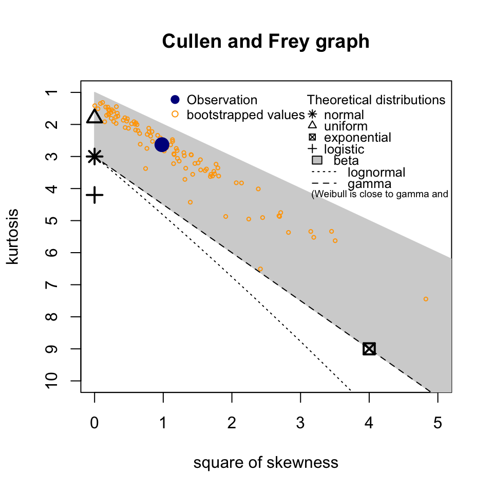
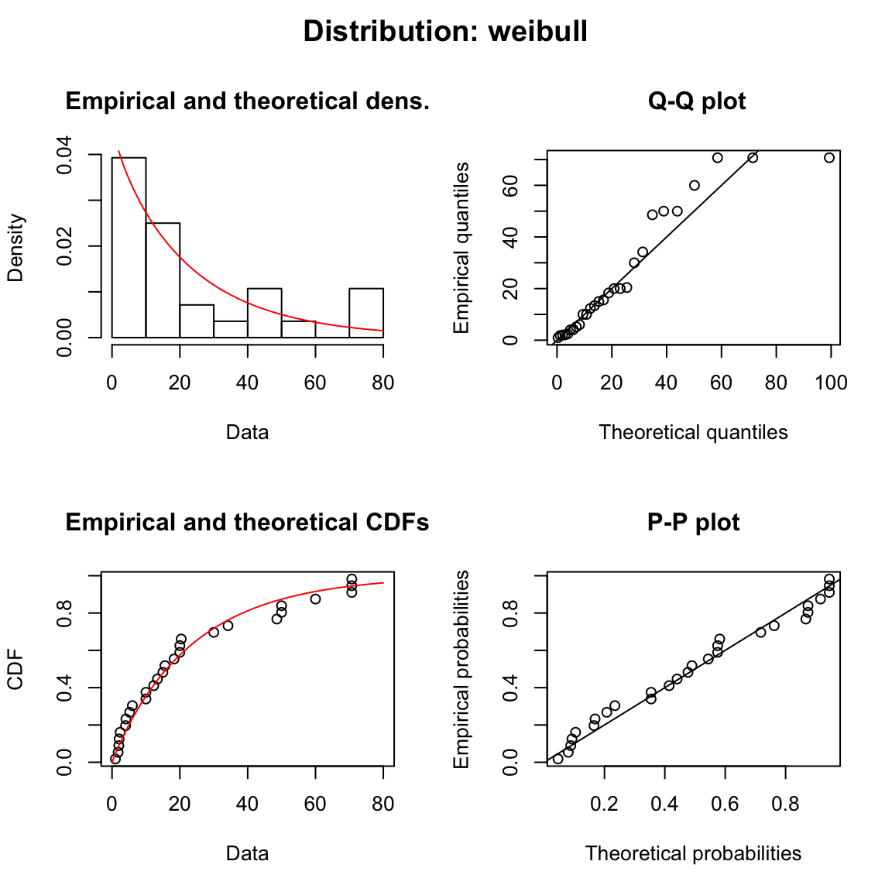
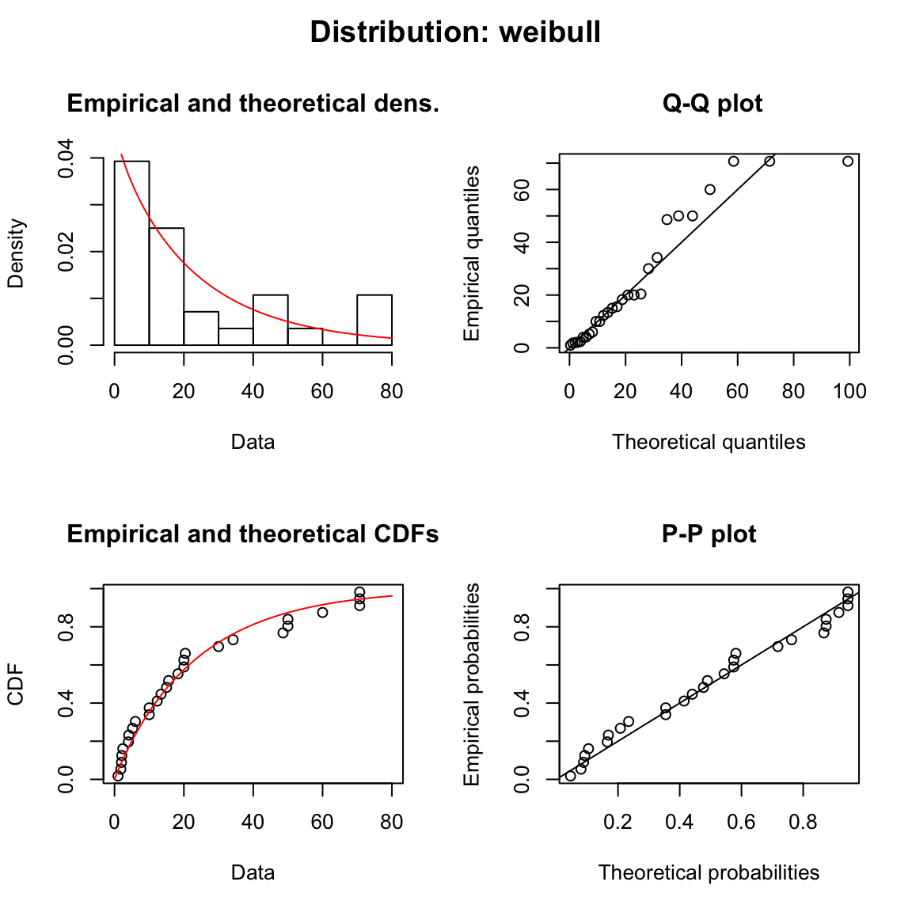
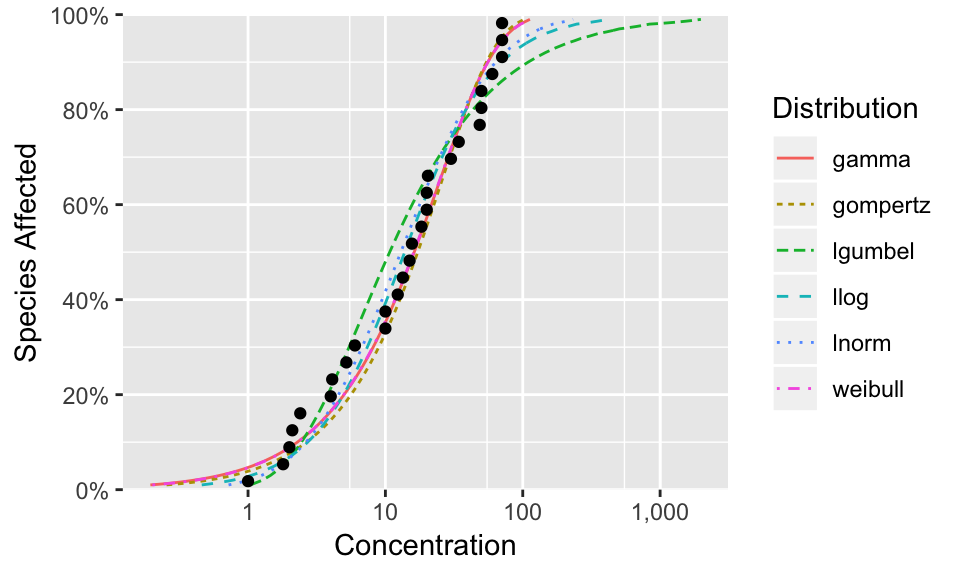
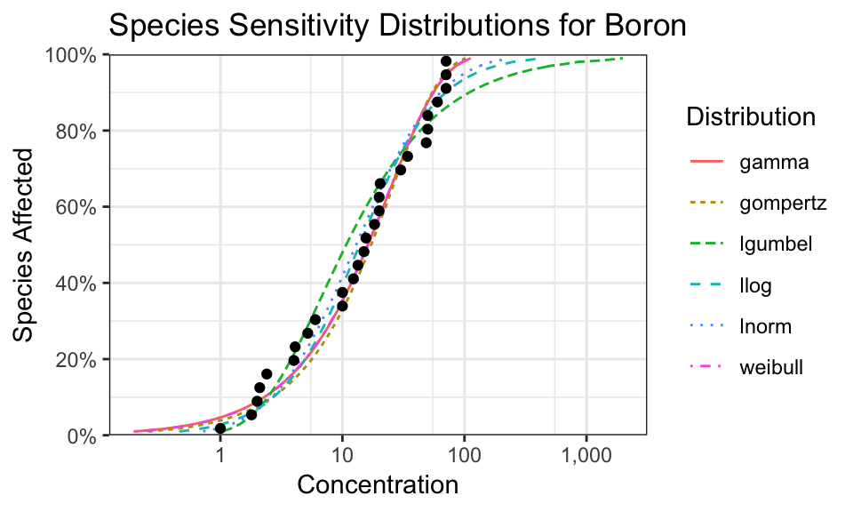
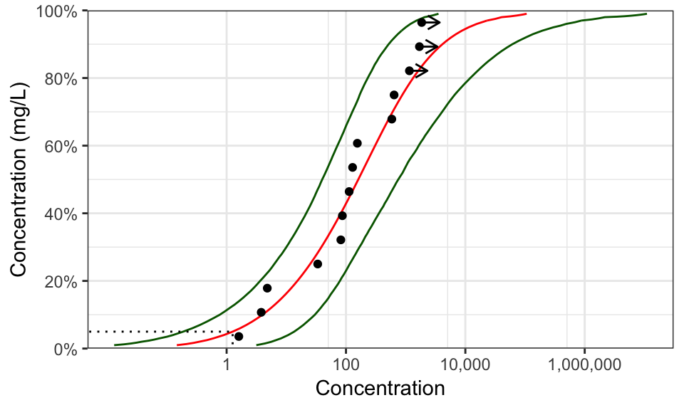

Introduction
The ssdtools package fits and plots Species Sensitivity Distributions. This vignette describes how to use ssdtools in conjunction with the fitdistrplus and ggplot2 packages, which it installs and extends.
Inputting Data
Data can be input from excel spreadsheets using readxl::read_excel() and from csv files using readr::read_csv().
Cullen Frey Plots
The data can be visualized using a cullen frey plot of the skewness and kurtosis. Here we plot species sensitivity data for Boron.

Fitting Distributions
The function ssd_fit_dists() inputs a data frame (with the concentration values, by default, in the Conc column) and fits one or more distributions. Here we fit the log-normal and weibull distributions to the Boron data.
library(ssdtools)
boron_data
#> # A tibble: 28 x 5
#> Chemical Species Conc Group Units
#> <chr> <chr> <dbl> <fct> <chr>
#> 1 Boron Oncorhynchus mykiss 2.1 Fish mg/L
#> 2 Boron Ictalurus punctatus 2.4 Fish mg/L
#> 3 Boron Micropterus salmoides 4.1 Fish mg/L
#> 4 Boron Brachydanio rerio 10 Fish mg/L
#> 5 Boron Carassius auratus 15.6 Fish mg/L
#> 6 Boron Pimephales promelas 18.3 Fish mg/L
#> 7 Boron Daphnia magna 6 Invertebrate mg/L
#> 8 Boron Opercularia bimarginata 10 Invertebrate mg/L
#> 9 Boron Ceriodaphnia dubia 13.4 Invertebrate mg/L
#> 10 Boron Entosiphon sulcatum 15 Invertebrate mg/L
#> # ... with 18 more rows
boron_dists2 <- ssd_fit_dists(boron_data, dists = c("lnorm", "weibull"))
boron_dists2
#> Fitting of the distribution ' lnorm ' by maximum likelihood
#> Parameters:
#> estimate Std. Error
#> meanlog 2.561645 0.2346291
#> sdlog 1.241540 0.1659073
#> Fitting of the distribution ' weibull ' by maximum likelihood
#> Parameters:
#> estimate Std. Error
#> shape 0.9662825 0.1454446
#> scale 23.5097478 4.8528313The coefficients can be extracted using the coef function
Model Diagnostics and Goodness of Fit
The resultant fitdists object can be plotted to display model diagnostics plots for each fit.
 

In addition, several goodness of fit statistics including the Akaike’s Information Criteron corrected for sample size (aicc) can be generated using ssd_gof().
Moving forwards we consider the same six fits to Boron as Schwarz and Tillmanns (2017).
boron_dists <- ssd_fit_dists(boron_data)
#> Warning in (function (data, distr, method = c("mle", "mme", "qme",
#> "mge"), : The dgompertz function should return a zero-length vector when
#> input has length zero
#> Warning in (function (data, distr, method = c("mle", "mme", "qme",
#> "mge"), : The pgompertz function should return a zero-length vector when
#> input has length zero
#> Warning in (function (data, distr, method = c("mle", "mme", "qme",
#> "mge"), : The plgumbel function should return a zero-length vector when
#> input has length zero
ssd_gof(boron_dists)
#> # A tibble: 6 x 9
#> dist ad ks cvm aic aicc bic delta weight
#> <chr> <dbl> <dbl> <dbl> <dbl> <dbl> <dbl> <dbl> <dbl>
#> 1 lnorm 0.507 0.107 0.0703 239. 240. 242. 1.42 0.133
#> 2 llog 0.487 0.0993 0.0595 241. 241. 244. 3.40 0.049
#> 3 gompertz 0.602 0.120 0.0822 238. 238. 240. 0 0.271
#> 4 lgumbel 0.829 0.158 0.134 244. 245. 247. 6.58 0.01
#> 5 gamma 0.441 0.117 0.0555 238. 238. 240. 0.019 0.268
#> 6 weibull 0.435 0.117 0.0543 238. 238. 240. 0.014 0.269For interpretation of the values see Schwarz and Tillmanns (2017).
A subset of distributions from a fitdists can be selected using the subset function.
Plotting Fits
The actual fits can be plotted using the ggplot generic autoplot.

As autoplot returns a ggplot object it can be modified prior to plotting, which is extremely useful.

5% Hazard Concentration
Typically, species sensitivity distributions are fitted to estimate the 5% hazard concentration (\(HC_5\)). This is the concentration that affects just 5% of the species tested. The model-averaged \(HC_5\) estimate (with 95% confidence limits) can be calculated as follows
ssd_hc(boron_dists)
#> # A tibble: 1 x 5
#> percent est se lcl ucl
#> <int> <dbl> <dbl> <dbl> <dbl>
#> 1 5 1.25 0.743 0.628 3.25By default model averaging is based on the Akaike’s Weights corrected for small sample size. To return the individual \(HC_5\) estimates and their respective Akaike’s Weights set average = FALSE
ssd_hc(boron_dists, average = FALSE)
#> # A tibble: 6 x 7
#> dist percent est se lcl ucl weight
#> <chr> <int> <dbl> <dbl> <dbl> <dbl> <dbl>
#> 1 lnorm 5 1.68 0.677 0.898 3.45 0.133
#> 2 llog 5 1.56 0.759 0.699 3.59 0.049
#> 3 gompertz 5 1.30 0.427 1.01 2.74 0.271
#> 4 lgumbel 5 1.77 0.533 1.11 3.26 0.01
#> 5 gamma 5 1.08 0.848 0.294 3.44 0.268
#> 6 weibull 5 1.09 0.722 0.397 3.10 0.269For interpretation of the values see Schwarz and Tillmanns (in prep.).
To get the \(HC_50\) estimates use
Predictions
The predict function can be used to generate model-averaged (or individual) estimates across the full range of hazard concentrations.
The resultant values provide valuable information
boron_pred
#> # A tibble: 99 x 5
#> percent est se lcl ucl
#> <int> <dbl> <dbl> <dbl> <dbl>
#> 1 1 0.304 0.335 0.129 1.07
#> 2 2 0.544 0.457 0.243 1.71
#> 3 3 0.780 0.557 0.364 2.26
#> 4 4 1.01 0.646 0.486 2.76
#> 5 5 1.25 0.729 0.615 3.25
#> 6 6 1.49 0.808 0.746 3.71
#> 7 7 1.73 0.884 0.883 4.16
#> 8 8 1.97 0.958 1.02 4.59
#> 9 9 2.21 1.03 1.17 5.03
#> 10 10 2.46 1.10 1.32 5.46
#> # ... with 89 more rowswhich can be plotted together with the original data to summarise an analysis
theme_set(theme_bw()) # change the theme
ssd_plot(boron_data, boron_pred, shape = "Group", color = "Group", label = "Species",
ylab = "Concentration (mg/L)") +
expand_limits(x = 5000) + # to ensure the species labels fit
scale_color_manual(values = c("Amphibian" = "Black", "Fish" = "Blue",
"Invertebrate" = "Red", "Plant" = "Brown")) +
ggtitle("Species Sensitivity for Boron")
Once again the returned object is a ggplot object which can be customized prior to plotting. By default, the plot includes the model-averaged 95% confidence interval as a shaded band and the model-averaged \(HC_5\) as a dotted line.
Weighted Data
The ssd_fit_dists() function allows the user to name a column that specifies the weights to use in the estimation. However, to date very little functionality has been implemented for weighted fits in the fitdistrplus package.
boron_data$Weight <- as.integer(boron_data$Group)
fit <- ssd_fit_dists(boron_data, weight = "Weight", dists = c("lnorm", "weibull"))
#> Warning in mledist(data, distname, start = arg_startfix$start.arg, fix.arg
#> = arg_startfix$fix.arg, : weights are not taken into account in the default
#> initial values
#> Warning in mledist(data, distname, start = arg_startfix$start.arg, fix.arg
#> = arg_startfix$fix.arg, : weights are not taken into account in the default
#> initial values
fit
#> Fitting of the distribution ' lnorm ' by maximum likelihood
#> Parameters:
#> estimate Std. Error
#> meanlog 2.352547 0.1414815
#> sdlog 1.233407 0.1000467
#> Fitting of the distribution ' weibull ' by maximum likelihood
#> Parameters:
#> estimate Std. Error
#> shape 0.9458077 0.08532335
#> scale 19.1184792 2.44996931
plot(fit)
#> Error in plot.fitdist(x, breaks = breaks, ...): The plot of the fit is not yet available when using weightsCensored Data
Censored data is that for which only a lower and/or upper limit is known for a particular species. If the right argument in ssd_fit_dists() is different to the left argument then the data are considered to be censored. fluazinam is a censored data set from the fitdistrplus package.
data(fluazinam)
head(fluazinam)
#> left right
#> 1 3.8 3.8
#> 2 33.6 33.6
#> 3 87.0 87.0
#> 4 1700.0 NA
#> 5 640.0 640.0
#> 6 1155.0 NAThere are less goodness-of-fit statistics available for fits to censored data (currently just aic and bic).
fluazinam_dists <- ssd_fit_dists(fluazinam, left = "left", right = "right")
#> Warning in (function (censdata, distr, start = NULL, fix.arg = NULL,
#> keepdata = TRUE, : The plgumbel function should return a zero-length vector
#> when input has length zero
#> <simpleError in optim(par = vstart, fn = fnobjcens, fix.arg = fix.arg, gr = gradient, rcens = rcens, lcens = lcens, icens = icens, ncens = ncens, ddistnam = ddistname, pdistnam = pdistname, hessian = TRUE, method = meth, lower = lower, upper = upper, ...): function cannot be evaluated at initial parameters>
#> Warning: gompertz failed to fit: Error in if (one.more) {: missing value where TRUE/FALSE needed
#> Warning: lgumbel failed to fit: Error in (function (censdata, distr, start = NULL, fix.arg = NULL, keepdata = TRUE, : the function mle failed to estimate the parameters,
#> with the error code 100
ssd_gof(fluazinam_dists)
#> Warning: Unknown or uninitialised column: 'aicc'.
#> # A tibble: 4 x 5
#> dist aic bic delta weight
#> <chr> <dbl> <dbl> <dbl> <dbl>
#> 1 lnorm 150. 151. 0 0.398
#> 2 llog 150. 151. 0.284 0.346
#> 3 gamma 153. 154. 3.18 0.081
#> 4 weibull 151. 153. 1.65 0.175But model-averaged predictions can be made using AIC
and the results plotted complete with arrows indicating the censorship.
ssd_plot(fluazinam, fluazinam_pred,
left = "left", right = "right",
ylab = "Concentration (mg/L)")
#> Warning: Removed 98 rows containing missing values (geom_path).
#> geom_path: Each group consists of only one observation. Do you need to
#> adjust the group aesthetic?
Extending ggplot
The sscda package provides three ggplot geoms to allow you construct your own plots. They are geom_ssd() to plot the original data, geom_hcintersect() to plot the hazard concentration and geom_xribbon() to plot the confidence intervals.
They can be used as follows
gp <- ggplot(boron_pred, aes_string(x = "est")) +
geom_xribbon(aes_string(xmin = "lcl", xmax = "ucl", y = "percent/100"), alpha = 0.2) +
geom_line(aes_string(y = "percent/100")) +
geom_hcintersect(xintercept = boron_pred$est[boron_pred$percent == 5], yintercept = 5/100) +
geom_ssd(data = boron_data, aes_string(x = "Conc"))
print(gp)
To log the x-axis use the following code.
gp <- gp + coord_trans(x = "log10") +
scale_x_continuous(breaks = scales::trans_breaks("log10", function(x) 10^x),
labels = comma_signif)
print(gp)
The current plot can be saved as a file using ggsave(), which also allows the user to set the resolution.